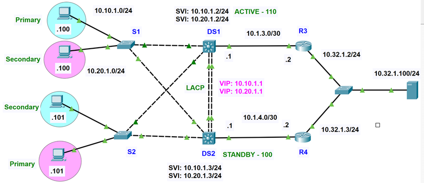

Kryssfrågor med slumpade frågor & svarsalternativ
Varje gång du startar eller klickar på "Ny Slumpad Omgång" blandas alla frågor och svarsalternativen helt automatiskt.
Frågetext laddas...
Diginto FHRP & HSRP Certifieringsfrågor
Baserat direkt på kursmaterialet från Mer om FHRP och HSRP översikt. Både frågor och svarsalternativ slumpas automatiskt!
Frågetext laddas...
✏️ Träna på Provets Kommandon (Skriv hela kommandot)
Skriv hela Cisco-kommandot från grunden vid prompten och klicka på Kontrollera eller tryck Enter!
Konfigurationer & Fyll i Luckor (Labb 6 & Labb 7)
Träna på alla steg och fyll i alla Cisco-kommandon för Labb 6: Feltolerant nätverk och Labb 7: Redundansteknik samverkan med steg-för-steg rättning!
DS1 Konfiguration & Nätverksroll
HSRP Active
Laddar information...
Interaktiva Topologier & Nätverkskartor
Se exakta Packet Tracer-diagram från dokumentet med klickbara enheter, gränssnitt, IP-adresser och HSRP-roller.
Interaktiv Inspektör
Snabbguide & Provfusk (Allt från anteckningarna)
Strukturerad sammanfattning av alla begrepp och värden som uttryckligen markerats med "KOMMER PÅ PROV".
Single Point of Failure (SPOF) & Redundans
Vad är en Single Point of Failure (SPOF)?
En SPOF är en enskild komponent vars fel gör att en hel tjänst eller en del av nätverket slutar fungera.
- Ensam gateway är en SPOF: Ett nätverk kan ha redundanta switchar och länkar på Layer 2, men om det bara finns en enda router konfigurerad som default gateway mot externa nät utgör den en SPOF. Fallerar den tappar alla klienter omedelbart extern anslutning!
- Räcker extra utrustning? Nej! Att enbart installera extra fysisk hårdvara räcker inte för full redundans.
- L2 vs L3 redundansprotokoll: På Layer 2 krävs protokoll som RSTP för att blockera loopar och öppna reservlänkar. På Layer 3 (IP-nivå) krävs ett FHRP-protokoll så att en reservrouter omedelbart kan ta över rollen som standard-gateway.
Vad menas med "Det Första Hoppet" (First Hop)?
Definition: Den allra första Layer 3-enheten (en router eller en L3-switch) som ett IP-paket passerar på sin väg utanför det lokala nätverket.
- För en klientdator eller server är detta hoppet till dess konfigurerade default gateway.
- En vanlig L2-switch är INTE första hoppet, eftersom den arbetar på datalänklagret (Layer 2) och enbart förmedlar ramar baserat på MAC-adresser.
- Problemet med statisk gateway: Om en klient är statiskt inställd på en specifik routers IP blir den helt bunden till den enheten. Klienten kan inte på egen hand växla över till en annan router om den primära slutar fungera!
Tre vanliga FHRP-protokoll
FHRP står för First Hop Redundancy Protocols och skapar en gemensam virtuell gateway.
| Protokoll | Typ & Transport | Roller | Lastbalansering |
|---|---|---|---|
| HSRP | Cisco • UDP port 1985 | Active och Standby (samt Listen, Speak, Learn, Initial) | En aktiv router per grupp |
| VRRP | Öppen standard • IP-protokoll 112 | Active / Master och Backup | En aktiv router per grupp |
| GLBP | Cisco • UDP port 3222 | AVG och AVF | Äkta lastbalansering: Flera routrar vidarebefordrar samtidigt! |
Virtuell MAC-adress & Hex-beräkning
HSRP genererar en virtuell MAC-adress automatiskt utifrån gruppnumret uttryckt i hexadecimal form:
- HSRPv1 format:
0000.0c07.acXX(XX = gruppnummer i hex) - HSRPv2 IPv4 format:
0000.0c9f.fXXX(XXX = gruppnummer i hex) - Grupp 10 (0A): 10 i hex är 0A ➔ HSRPv1:
0000.0c07.ac0a| HSRPv2:0000.0c9f.f00a - Grupp 150 (96): 150/16 = 9 rest 6 ➔ HSRPv1:
0000.0c07.AC96 - Grupp 255 (FF): 255/16 = 15 rest 15 (F och F) ➔ HSRPv1:
0000.0C07.ACFF - Viktig regel: Den virtuella MAC-adressen är densamma även när reservroutern tar över i Active! Klienterna slipper därmed uppdatera sin ARP-tabell.
Hur når klienten sin gateway? ARP & 'arp -a'
- Klienten ser att målet finns utanför det egna subnätet.
- Med ARP frågar klienten efter MAC-adressen för default gatewayens VIP (t.ex. 192.168.1.1).
- Endast den aktiva routern svarar med HSRP-gruppens virtuella MAC-adress (Standby ignorerar förfrågan).
- Klienten skickar Ethernet-ramen adresserad till den virtuella MAC-adressen.
- Paketets destinations-IP är fortfarande den slutliga externa mottagaren. Den aktiva routern använder sin routingtabell för att vidarebefordra paketet.
- I Windows kommandotolk körs
arp -a: visar gatewayens VIP bunden till virtuell MAC som typ dynamic.
HSRP Version 1 kontra Version 2
| Egenskap | HSRPv1 (Version 1) | HSRPv2 (Version 2) |
|---|---|---|
| Gruppintervall | Grupp 0 – 255 | Grupp 0 – 4095 (täcker hela VLAN-intervallet!) |
| Multicast IPv4 | 224.0.0.2 |
224.0.0.102 |
| Virtuell MAC (IPv4) | 0000.0c07.acXX |
0000.0c9f.fXXX |
| Timers | Sekunder | Inbyggt stöd för millisekunder (msec) |
| IPv6-redundans | Stöds ej | Multicast FF02::66 och UDP 2029 |
HSRP:s 6 Tillstånd (States i exakt ordning)
Prioritet, Tie-breaker & Vad händer vid omstart?
- Intervall & Standard: Konfigureras mellan 0 och 255. Standardvärdet är 100.
- Högst prioritet vinner: Interfacet med högst prioritet blir Active.
- Tie-breaker vid samma prioritet: Den enhet som har högsta fysiska IP-adress på interfacet blir Active! (T.ex. R1 10.1.1.2 vs R2 10.1.1.3 ➔ R2 blir Active).
- Vad händer när tidigare Active startar om? Den tar INTE tillbaka Active automatiskt, även om den har högre prioritet!
- Lösning: Med kommandot
standby <grupp> preemptaktiverat på routern med högre prioritet kan den preemptera och återta rollen som Active.
HSRP Timers & 3x Beräkningsregeln
- Hello-timer normalt: 3 sekunder (routern skickar meddelande som visar att den lever).
- Hold-timer normalt: 10 sekunder (om standby inte får hello under denna tid tar den över).
- 3x Beräkningsformeln: Hold-timern bör vara minst tre gånger Hello-timern (t.ex. 3 × 3 + 1 ≈ 10 sekunder).
- Varför? Det minskar risken för onödiga rollbyten (flapping) vid hög CPU-belastning eller tillfälligt förlorade paket.
- Snabbare övertagande: Konfigurera t.ex. Hello 1 sekund och Hold 3 sekunder (
standby 150 timers 1 3). För sub-sekund krävs millisekunder (msec).
Interface Tracking – Skydd mot brutna uplinks (Black Holes)
Vad gör Interface Tracking och varför behövs det?
Om routerns uplink mot internetleverantören dör, men routern fortfarande skickar HSRP Hellos på LAN-sidan, vet inte standby-routern att uplänken är död. Klienternas trafik dirigeras då in i en blindgång – ett black hole!
Genom att konfigurera standby <grupp> track <interface> [avdrag] (t.ex. standby 150 track g0/0 20) instrueras HSRP-processen att kontinuerligt övervaka uplänken. Går porten ner sänks routerns prioritet automatiskt med avdraget. Reservroutern (med preempt) tar då omedelbart över som Active och trafiken leds ut en fungerande väg!
Obs från provet: Grundläggande interface tracking upptäcker bara om det lokala interfacet går ner. Ett fel längre bort i operatörens nätverk kräver annan övervakning (t.ex. IP SLA object tracking).